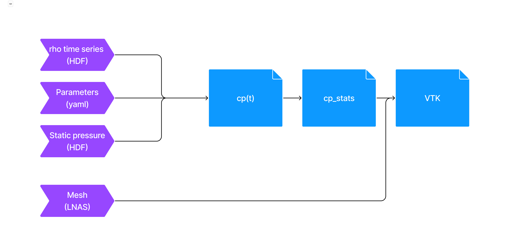

Pressure Coefficient#
The Pressure Coefficient, \(c_p\), is a dimensionless quantity that provides a generalized representation of the pressure distribution on a surface, or body, exposed to a fluid flow. It allows us to assess how the local pressure at a specific point differs from the surrounding free-stream pressure, accounting for the dynamic pressure of the fluid flow.
Definition#
The pressure coefficient is a dimensionless form of the pressure signal. It is obtained by the following expression:
By definition, the pressure coefficient is a local property for each triangle of the mesh.
Use Case#
It is used primarily for analysis and interpretation of the measured data.
It should always be generated, since it is the first analysis step. It is a fundamental property of the pressure normalization, and it is used to calculate the other coefficients. However, it is not the final result to be delivered to clients.
Artifacts#
In order to use the pressure normalization module, the user has to provide a set of artifacts:
A lnas file: It contains the information about the mesh.
HDF time series: It contains the pressure signals indexed by each of the mesh triangles.
Parameters file: It contains the values for adimensionalization as well as other configs parameters.
Static reference pressure time series: It contains the pressure signals for probes far away from the building.
Which outputs the following data:
Dimensionless time series: pressure coefficient time series for each triangle.
Statistical results: statistical values for the pressure coefficient time series, for each triangle.
VTK File: contains the statistical values inside a mesh representation (VTK).
An illustration of the pressure coefficient module pipeline can be seen below:
{kind=link}
Usage#
The parameter file for converting the pressure data into pressure coefficient looks as follows:
pressure_coefficient:
default:
# Define how many chunks the output time series will be split into. Optional, defaults to 1
number_of_chunks: 10
# Select the time interval to filter the signal and calculate statistics
timestep_range: [10000, 20000]
# Velocity at the building interest height
simul_U_H: 0.05
# Simulation characteristic length scale for time scale conversion
simul_characteristic_length: 0.8445
# Define which statistics will be calculated
statistics:
- stats: "mean"
- stats: "rms"
- stats: "skewness"
- stats: "kurtosis"
- stats: "mean_eq"
params:
scale_factor: 0.61
- stats: "min"
params:
method_type: "Absolute"
- stats: "max"
params:
method_type: "Gumbel"
peak_duration: 3 # in seconds
event_duration: 600 # in seconds. Period of extreme event
n_subdivisions: 10 # Number of subdivisions
non_exceedance_probability: 0.78 # Confidence parameter in %
full_scale_U_H: 40
full_scale_characteristic_length: 22.4
- stats: "max"
params:
method_type: "Peak"
peak_factor: 3 # xtr = avg +- factor * rms
- stats: "max"
params:
method_type: "Moving Average"
window_size_interval: 3 # s
full_scale_U_H: 40
full_scale_characteristic_length: 22.4
To invoke and run the conversion, the following command can be used:
uv run python -m cfdmod.use_cases.pressure \
--output {OUTPUT_PATH} \
--p {PRESS_SERIES_PATH} \
--s {STATIC_PRESS_PATH} \
--mesh {LNAS_PATH} \
--config {CONFIG_PATH}
Another way to run the pressure coefficient conversion, is through the notebook
Data format#
Note
For more information about the normalized time scale (\(t^*\)), check the Normalization section
time_idx/point_idx |
Normalized time (\(t^*\)) |
0 |
1 |
2 |
|---|---|---|---|---|
0 |
0.0 |
1.25 |
1.15 |
1.32 |
0 |
1.0 |
1.1 |
1.5 |
1.13 |
scalar |
0 |
1 |
2 |
3 |
|---|---|---|---|---|
min |
-1.25 |
-0.9 |
-1.1 |
-0.2 |
max |
1.15 |
0.95 |
1.13 |
0.19 |
mean |
0.83 |
0.9 |
0.5 |
0.13 |
rms |
0.26 |
0.25 |
0.13 |
0.19 |
skewness |
1.15 |
-0.95 |
1.13 |
0.19 |